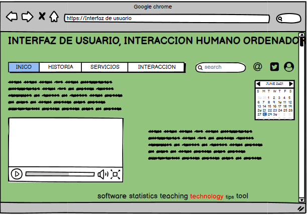

PROPOSITO
Permitir mediante herramientas simples y eficietes la interaccion perosna-odenador,
apropiandose del aprendiazaje, considerando que hoy por hoy
la informatica ha crecido principalmente por que las actividades en su mayoria son mediante software
o aplicaiones
en equipos de computo o celulares, lo cual debe reflejar cualidades fisicas que permitan la
interacción, como la visibilidad
que nos permite ejecutar una acción sobre un objeto visible y que el objeto nos permita conocer
donde y como se debe hacer la acción.
ademas de la interacción física entre usuario y computadora, el nivel cognitivo es importante para
que a persona comprenda
la comunicación y actue frente al diseño e interprete adecuadamente, teniendo en cuenta todo el tipo
de población ya que podemos
contar con personas con discapacidad temporal o permanente que les impida acceder a sus
funciones.
MOCKUP
